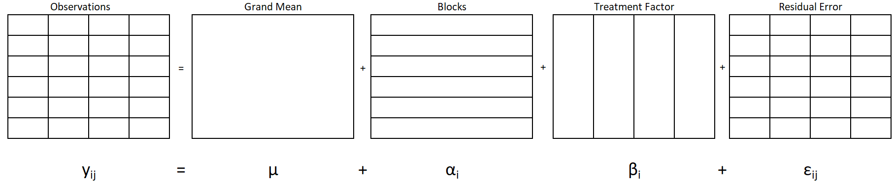
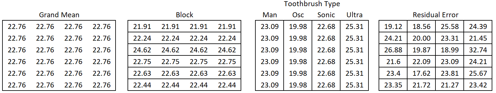
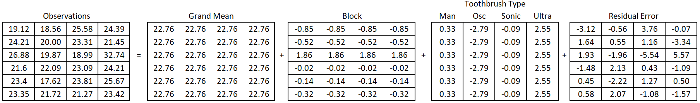
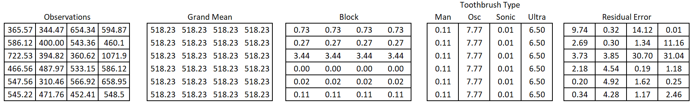
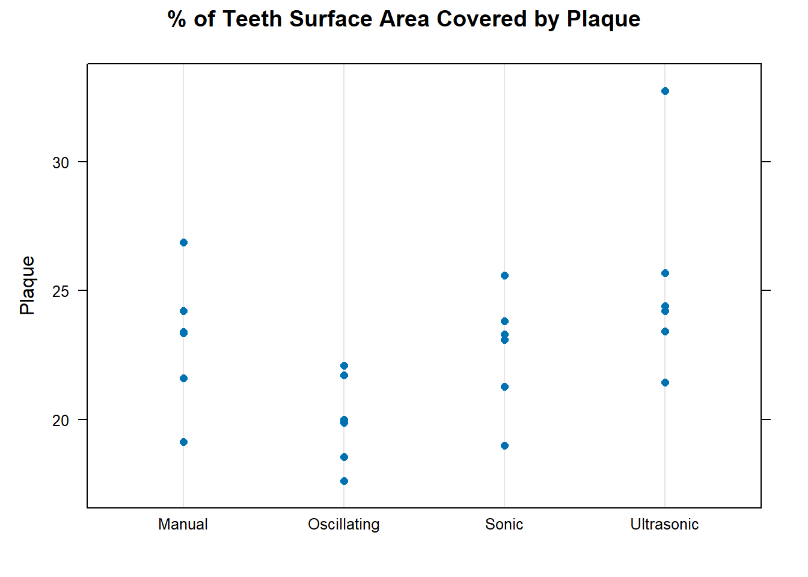
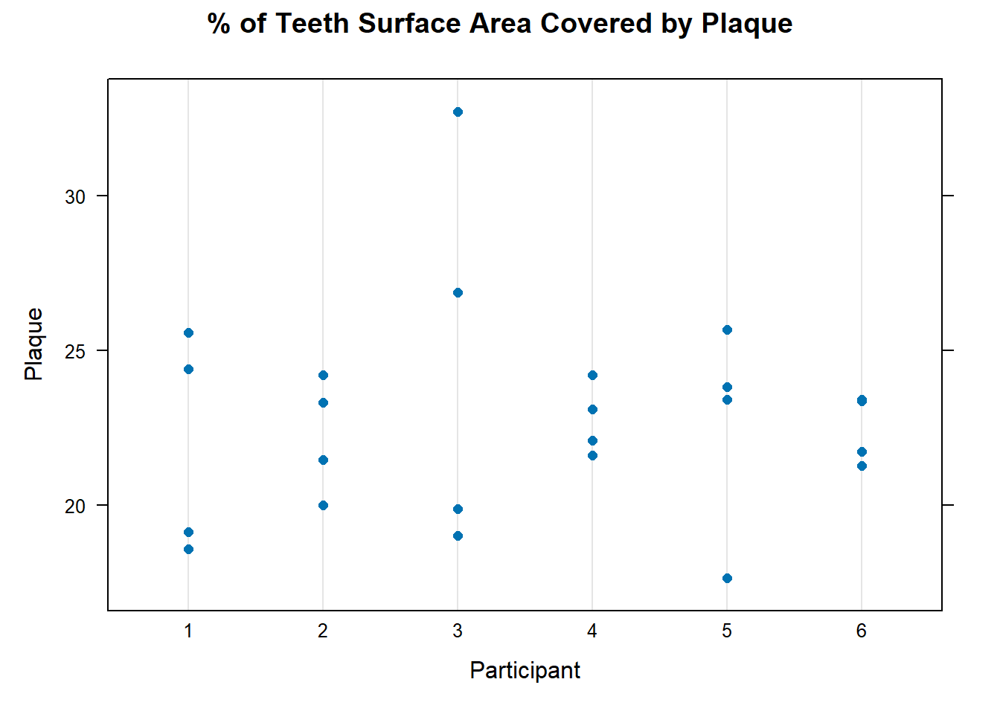
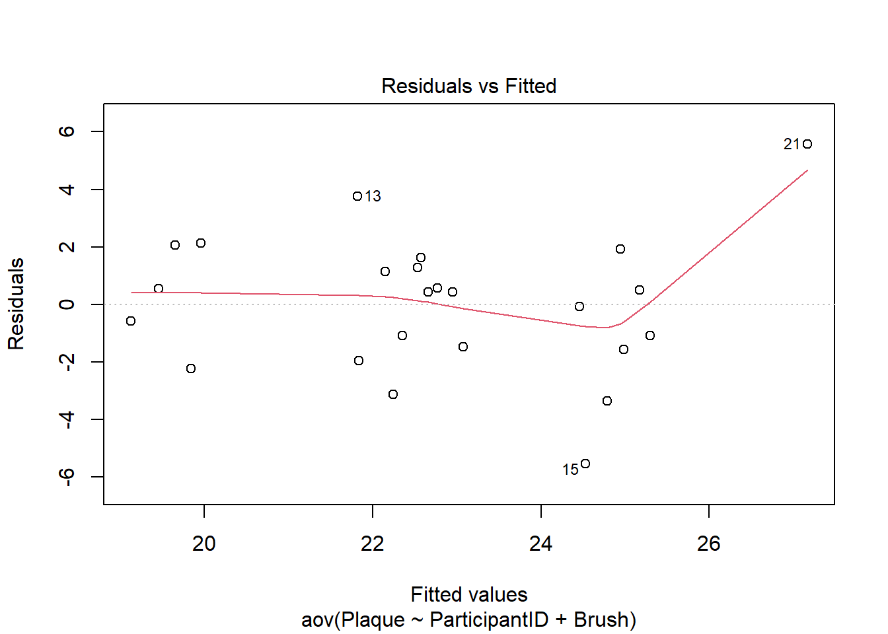
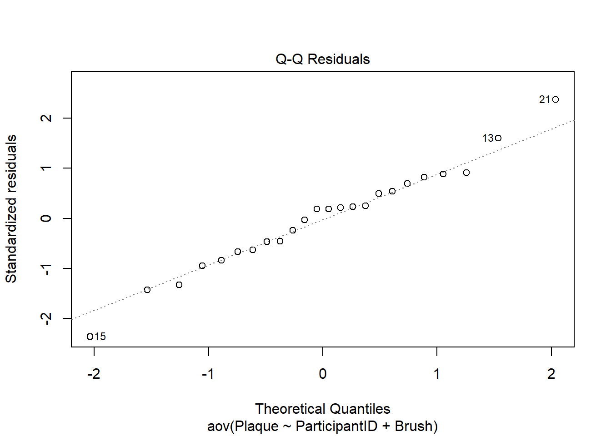
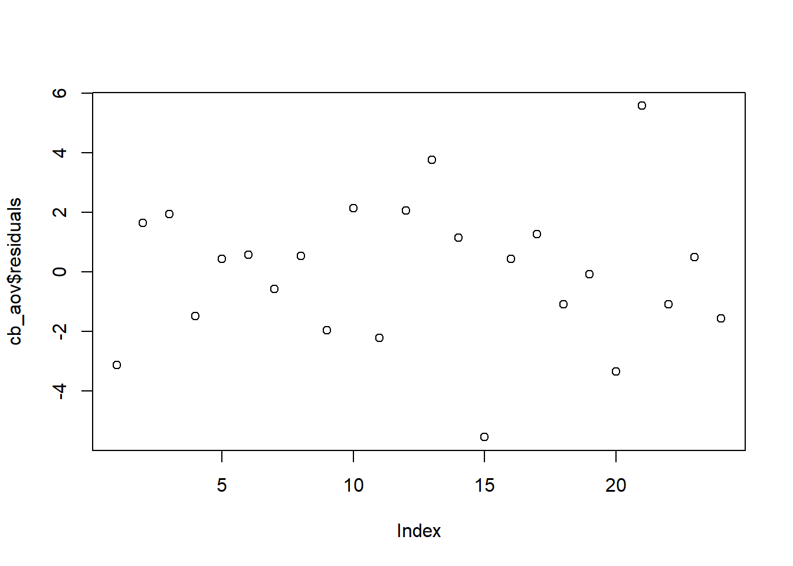

| ParticipantID | Period1 | Period2 | Period3 | Period4 |
|---|---|---|---|---|
| 1 | manual | oscillating | sonic | super sonic |
| 2 | manual | oscillating | sonic | super sonic |
| 3 | manual | oscillating | sonic | super sonic |
| 4 | manual | oscillating | sonic | super sonic |
| 5 | manual | oscillating | sonic | super sonic |
| 6 | manual | oscillating | sonic | super sonic |
CB[1]
Overview
In a complete block design (CB[1]), there are two controlled factors: a treatment factor and a blocking factor. The study’s objective is usually to measure and/or test the treatment factor effects. The blocking factor is included to avoid confounding the treatment factor with the blocking factor and to reduce the variance of the error term.
Tip
In a CB[1] design, there is only one observation per treatment per block, and thus an interaction effect cannot be estimated. In a CB[1], the treatment by block interaction is therefore assumed to be zero.
The toothbrush example can be used to illustrate this design. Imagine the toothbrush researchers are still in the planning stages of the experiment. Researchers want to pre-emptively address the argument that one toothbrush performs better (or worse) simply because the people who use that brush in the study are in some way better at brushing. There are a couple of things the researchers can do. They should of course provide training/education to each participant about the proper way to brush. This would help, but old brushing habits die hard, and skeptics can argue that behavior won’t change.
In addition to adjusting experimental protocols, the design of the experiment can be adjusted to address the concern. Specifically, the researchers can block on participant. The experiment would look like this:
A person uses a particular brush for a set period.
At the end of the period, their plaque amount would be measured and their teeth cleaned
Then they would use a different brush for the same set amount of time.
The process would repeat until the person had used all 4 brushes.
The order of the brush will be randomized for each person to remove any bias due to learning, fatigue, or gradual plaque build up.
Factor Structure
The factor structure for a CB[1] design still has the two universal factors of the grand mean and residual error. There are also two structural factors: blocks and treatments.
In this case, the blocks factor accounts for variation in participants, and the treatment is toothbrush type. There are 6 participants in the study (6 block factor levels). Each toothbrush type appears once in each block. There are 24 observations total, 1 observation for each combination of block and toothbrush.
Hypothesis and Model
Each factor (i.e. meaningful partition of the data) in Figure 1 corresponds to a term on the right hand side of Equation 1:
\[ y_{ij} = \mu + \alpha_i + \beta_j + \epsilon_{ij} \tag{1}\]
Where
\(y_{ij}\) is the observation that belongs to level i of \(\alpha\) and level j of \(\beta\).
\(\mu\) is the grand mean of the entire dataset.
\(\alpha\) is the effect of participant, and j goes from 1 to 6 since there are 6 participants / blocks.
\(\beta\) is the effect of toothbrush, and i goes from 1 to 4 since there are 4 toothbrush types.
\(\epsilon\) is the residual error term
Note that since there is only one observation per factor level combination, there is not enough degrees of freedom to estimate an interaction effect.
The hypothesis of interest for a CB[1] study is about the treatment factor:
Block is a nuisance factor and not of particular interest. If you desired to test the Block factor as well, the null hypohtesis would be \[ Ho: \alpha_i = 0 \text{ for all } i\]
\[H_a: \alpha_i \ne 0 \text{ for some }i\]
\[H_0: \beta_j = 0 \text{ for all }j\]
\[H_a: \beta_i \ne 0 \text{ for some }j\]
Assumptions
An ANOVA model may be used to analyze data from a CB[1] design if the following requirements are satisfied.
| Requirements | Method for Checking | What You Hope to See |
|---|---|---|
| Constant variance across factor levels1 | Residual vs. Fitted Plot | No major disparity in vertical spread of point groupings |
| Normally Distributed Residuals | Normal Q-Q plot | Straight line, majority of points in boundaries |
| Independent residuals | Order plot | No pattern/trend |
| Familiarity with/critical thinking about the experiment | No potential source for bias |
Design
In a complete block design, each treatment is observed once in each block. Each block represents its own mini-replicate of the experiment. While treatment is purposefully varied to address the research question, blocks are a nuisance factor that we include in the design and analysis to more precisely estimate treatment effects.
Treatments are assigned completely at random within each block. Consider how this is done for the toothbrush example explained above in which we are blocking on participant. We can start by listing out each block and treatment. In this example, there are 24 observations, each observation represents a time slot in the study for a particular person, 6 participants x 4 time slots = 24 observations.
The design laid out in the format below is called “wider” format. It is helpful for humans to see it this way and fits in the way we have drawn our factor diagram (Figure 1)
If we proceed with the experiment like this, all the participants will get the toothbrushes in the same order. Order and toothrbrush will be confounded: we won’t be able to tell if a toothbrush’s effect is due to the brush itself or due to where it falls in the sequence. We will therefore randomize the order of the brushes for each participant. We end up with this result:
| ParticipantID | Period1 | Period2 | Period3 | Period4 |
|---|---|---|---|---|
| 1 | manual | oscillating | sonic | super sonic |
| 2 | sonic | manual | oscillating | super sonic |
| 3 | oscillating | sonic | super sonic | manual |
| 4 | oscillating | super sonic | sonic | manual |
| 5 | oscillating | manual | sonic | super sonic |
| 6 | manual | oscillating | sonic | super sonic |
Having an idea of how to do this randomization in R can be helpful. R (and most softwares) will need the design laid out in “longer” form first as shown below (this is the unrandomized experiment):
Code
ParticipantID <- rep(1:6, each = 4)
Brush <- rep(c("manual", "oscillating", "sonic", "super sonic"), times = 6)
Order <- rep(1:4, times = 6)
longer <- tibble(ParticipantID, Brush, Order)
pander(longer)| ParticipantID | Brush | Order |
|---|---|---|
| 1 | manual | 1 |
| 1 | oscillating | 2 |
| 1 | sonic | 3 |
| 1 | super sonic | 4 |
| 2 | manual | 1 |
| 2 | oscillating | 2 |
| 2 | sonic | 3 |
| 2 | super sonic | 4 |
| 3 | manual | 1 |
| 3 | oscillating | 2 |
| 3 | sonic | 3 |
| 3 | super sonic | 4 |
| 4 | manual | 1 |
| 4 | oscillating | 2 |
| 4 | sonic | 3 |
| 4 | super sonic | 4 |
| 5 | manual | 1 |
| 5 | oscillating | 2 |
| 5 | sonic | 3 |
| 5 | super sonic | 4 |
| 6 | manual | 1 |
| 6 | oscillating | 2 |
| 6 | sonic | 3 |
| 6 | super sonic | 4 |
Now randomize the order of the brushes for each participant. The resulting randomization matches what was shown in wider format above, but is now in longer format.
Code
tibble(ParticipantID, Brush) %>% #This puts the two columns together
group_by(ParticipantID) %>% #randomize within each participant
slice_sample(n = 4) %>% #shuffle the Brushes
bind_cols(Order = rep(1:4, times = 6)) #put the order column back on| ParticipantID | Brush | Order |
|---|---|---|
| 1 | manual | 1 |
| 1 | oscillating | 2 |
| 1 | sonic | 3 |
| 1 | super sonic | 4 |
| 2 | sonic | 1 |
| 2 | manual | 2 |
| 2 | oscillating | 3 |
| 2 | super sonic | 4 |
| 3 | oscillating | 1 |
| 3 | sonic | 2 |
| 3 | super sonic | 3 |
| 3 | manual | 4 |
| 4 | oscillating | 1 |
| 4 | super sonic | 2 |
| 4 | sonic | 3 |
| 4 | manual | 4 |
| 5 | oscillating | 1 |
| 5 | manual | 2 |
| 5 | sonic | 3 |
| 5 | super sonic | 4 |
| 6 | manual | 1 |
| 6 | oscillating | 2 |
| 6 | sonic | 3 |
| 6 | super sonic | 4 |
Decomposition
In the decomposition section we do the analysis of variance by hand. In other words, we decompose the variability in the response values and attribute that variability to the various factors in the experiment.
To do a decomposition, we will represent the data in “wider” format. This is easier to see, even though most of the time the computer will want it in “longer” format. We will also organize the data without regard to the order in which it was actually collected. In other words, even though the order of brushes was randomized, the data will be organized/displayed in the factor structure, without an attempt to represent the actual order of brushes.
Figure 2 gives the factor structure of the complete block design for the toothbrush study, and the accompanying mathematical model.

Where
The observed values \(y_{ij}\) on the left of the equals sign show that there are 24 observations of plaque coverage, one for each unique combination of the levels of toothbrush and Block.
The grand mean factor (\(\mu\)) is the grand mean of the entire dataset. The single large cell indicates that there is only one grand mean and it is part of every observation.
The block factor has one partition per row. All the observations in a row come from the same participant. A participant is a block in this case and a participant’s effect is represented in the model by \(\alpha_i\), where i goes from 1 to 6 since there are 6 participants/blocks.
The treatment factor involves the four types of brushes, represented by the four vertically long cells. Each factor level may have a distinct mean and effect. The factor level effect is represented in the model by \(\beta_j\), where j goes from 1 to 4 since there are 4 types.
The residual error represents the difference between the observed value and the predicted value. The predicted value, also called the fitted value, is the sum of the grand mean, treatment effect, and block effect for a given individual. Each cell represents a distinct value for the residual error and is written as \(\epsilon_{ij}\).
A CB[1] design has four analysis factors: the grand mean, blocks, treatment, and residual. The effects of these factors can be summed together to find each observed value. Notice there is no interaction factor. If we cross treatment factor and block to create an interaction, we end up with the exact same partitions as we have for the residual factor. Thus, we can use the data to estimate an interaction or to estimate residual errors, but not both. We need the residual error to conduct our hypothesis test of the treatment, and therefore this model operates under the assumption that there is no interaction between the treatment and blocking factors.
Degrees of Freedom
We can use our understanding of inside vs. outside factors to determine the degrees of freedom (df) for the grand mean, treatment factor, blocks, and residual errors. We start with 24 observations - or pieces of information. In other words, we have 24 degrees of freedom that need to be allocated to the factors.
General Rule for Degrees of Freedom
Degrees of Freedom for a factor = Total levels of a factor minus the sum of the degrees of freedom of all outside factors
An alternative way to find degrees of freedom is to count the number of unique pieces of information in a factor.
The grand mean has one level and there are no factors outside of grand mean. Therefore, its degrees of freedom equals one. This will always be the case.
In this case there are two controlled factors: treatment factor (toothbrush) and blocking factor (participant). For treatment factor, there are four levels of the factor (shown by the four vertically long cells for treatment factor in Figure 2). Since grand mean is the only factor outside of toothbrush, take the number of levels for toothbrush (4) and subtract the degrees of freedom for grand mean (1), which yields 4-1 = 3 degrees of freedom for toothbrush.
We could just as easily have used the other approach to finding the degrees of freedom: counting the unique pieces of information the toothbrush effects really contain. Since all observations from the same toothbrush will have the same effect, we only need to know 4 pieces of information: the effect of each toothbrush. But, because we know that the effects must all sum to zero, only 3 of the effects are free to vary and the 4th one is constrained to be whatever value will satisfy this mathematical condition. Thus, the degrees of freedom are 3. As soon as we know effect for 3 factor levels of toothbrush, we can fill in the toothbrush effects for all the observations.
Though we don’t plan to test for the Block factor, we walk through the steps here to have a complete accounting of the degrees of freedom and variance. To calculate Block degrees of freedom, a similar approach of counting “free numbers” can be used. Namely, after estimating a participant’s effect on plaque, I can fill that effect in for all the observations pertaining to that participant’s partition in the block factor. Therefore, there is just one unique value in each row, meaning one degree of freedom per participant. However, since the sum of effects across participant must equal zero, the degrees of freedom will be equal to one less the number of participants.
Alternatively, degrees of freedom can be calculated using the general rule. There are 6 levels for participant Blocks, and grand mean is the only outside factor. Since grand mean has 1 degree of freedom, you get 6−1=5 degree of freedom for blocks.
Finally, the residual degrees of freedom can be found using the general rule. Since the residual error factor is inside of all other factors, this is the same as finding how many degrees of freedom are leftover after calculating degrees of freedom for all other factors. In this example, there were 24 observations total, so we subtract the degrees of freedom for the other factors from 24. This returns 24−(1+3+5)=15 degrees of freedom for residuals.
Factor Effects
We can use our understanding of inside vs. outside factors to estimate the effect size of the grand mean, treatment factor, blocks, and residual errors. Recall the general rule for estimating effect size of a factor:
General Rule for Effect Size
Effect size = Factor level mean - sum of the effects of all outside factors
We start by calculating factor level means.
Factor Level Means
Figure 3 shows our data set with partition lines for structural factors in place. We will proceed to calculate the factor level means for each factor.
The grand mean is the mean of all the observations
\[ \hat{\mu} = \bar{y}_{\cdot\cdot} = \frac{19.12 + 18.56 + 25.58 + 24.39 + 24.21 + ... + 23.42}{24} = 22.76 \]
Now find the mean for each level of toothbrush type.
\[ \bar{y}_\text{manual} = \bar{y}_{\cdot 1} = \frac{19.12 + 24.21 + 26.88 + 21.6 + 23.4 + 23.35}{6} = 23.10 \]
\[ \bar{y}_\text{oscillating} = \bar{y}_{\cdot 2} = \frac{18.56 + 20.00 + 19.87 + 22.09 + 17.62 + 21.72}{6} = 19.98 \]
\[ \bar{y}_\text{sonic} = \bar{y}_{\cdot 3} = \frac{25.58 + 23.31 + 18.99 + 23.09 + 23.81 + 21.27}{6} = 22.68 \]
\[ \bar{y}_\text{ultrasonic} = \bar{y}_{\cdot 4} = \frac{24.39 + 21.45 + 32.74 + 24.21 + 25.67 + 23.42}{6} = 25.31 \]
Note the effects for grand mean and toothbrush are the same as they are in the BF[2].
Now find the mean for each level of block (only the first two blocks are illustrated here).
\[ \bar{y}_\text{Block1} = \bar{y}_{1\cdot} = \frac{19.12 + 18.56 + 25.58 + 24.39}{4} = 21.91 \tag{2}\]
\[ \bar{y}_\text{Block2} = \bar{y}_{2\cdot} = \frac{24.21 + 20.00 + 23.31 + 21.45}{4} = 22.24 \]
The mean for each residual error factor level is the observed value itself since there is just 1 observation per level. Therefore, there are no calculations to show.
Figure 4 displays the factor levels means associated with each observation.

Factor Level Effects
Now that we have calculated means for the levels of each factor, we can calculate the effects of the factor levels2.
There is only one level of grand mean and there are no outside factors. Therefore, the effect due to grand mean is 22.76 (equivalent to its mean) and this effect is applied to all 24 observations.
The toothbrush factor has four levels: one for each brush type. We will use the general rule for calculating factor level effects. To calculate the effect of a toothbrush, take the toothbrush mean and subtract the grand mean (the only factor outside of toothbrush) from it. For the manual brush, this looks like:
\[ 23.09 - 22.76 = 0.33 \]
Using the manual brush has the effect of increasing a person’s plaque area percentage by 0.33 percentage points on average compared to the grand mean. In a similar way you can find the effect for the oscillating brush: \(19.98−22.76=−2.79\). This means the amount of plaque decreased by 2.79 on average with this brush compared to the grand mean. For a sonic toothbrush, the effect is \(22.68−22.76=−0.09\). For an ultrasonic brush the effect is \(25.31−22.76=2.55\).
Calculating the effects for the block factor in the experiment follows a similar pattern and also uses the general rule for calculating effect sizes. Block is not outside or inside of toothbrush, but grand mean is outside of block. To calculate the effect an of individual participant (i.e. block), take the participant’s mean across all 4 treatments (see Equation 2 as an example) and subtract the grand mean from it:
\[ 21.91 - 22.76 = -0.85\]
A similar calculation is done to find the estimated effect for participant 2 (i.e. block 2):
\[ 22.24 - 22.76 = -0.52\]
Similar calculations are performed for the remaining four blocks (i.e. participants).
You can think of the last term in the model as residual effects, but we usually refer to them simply as residuals. Residual means “left over” or “remaining”. After adding all the other effects together, the residual is the remaining effect, or deviation, needed to arrive at the observed value.
More simply, the residual is the actual observed value minus the predicted value.
The observed plaque coverage for Participant 1 using the manual brush is 19.12. The sum of the other factor effect represents the predicted value for this factor level combination:
\[ \begin{align} \hat{y}_{11} &= \hat{\mu} + \hat{\alpha}_1 + \hat{\beta}_1 \\ 22.24 &= 22.76 + \text{-}0.85 + 0.33 \end{align} \]
The residual then, is
\[ \begin{align*} e_{11} &= y_{11} - \hat{y}_{11} \\ &= 19.12 - 22.24 \\ &= -3.12 \end{align*} \]
The residual can be interpreted to mean that this participant’s plaque measurement was 3.12 percentage points lower than we would have predicted.
A similar calculation is done to find the residual for participant 1 with the oscillating brush. Here we condense a couple of the steps:
\[ \begin{align} e_{ij} &= y_{12} - \hat{y}_{12} \\ &= y_{12} - (\hat{\mu} + \hat{\alpha}_1 + \hat{\beta}_2) \\ &= 18.56 - (22.76 + \text{-}0.85 + \text{-}2.79) \\ &= 18.56 - 19.12 \\ &= -0.56 \end{align} \]
After using the oscillating toothbrush, Participant 1’s percent of teeth surface area with plaque is 0.56 percentage points lower than the model predicts.
We perform these calculations for every observation. Figure 5 shows the effects that make up each observation3.

Completing the ANOVA Table
Now that we have calculated degrees of freedom and effects for each factor, we can calculate the remaining pieces of the ANOVA table: Sum of Squares (SS), Mean Squares (MS), F-statistic and p-value. A completed ANOVA summary table contains the information we need for a hypothesis test of the treatment effect.
In an ANOVA table, each factor and their associated degrees of freedom are listed on the left. Note: the total degrees of freedom are the total number of observations.
| Source | df | SS | MS | Fvalue | pvalue |
|---|---|---|---|---|---|
| Grand Mean | 1 | ||||
| Participant | 5 | ||||
| Brush | 3 | ||||
| Residual Error | 15 | ||||
| Total | 24 |
To get the sum of squares (SS) of a factor, the effects of the factor must be squared, and then summed. Figure 5 shows the effects, while Figure 6 shows the squared effects.

The total sum of squares is obtained by summing the squared observations as shown in Equation 3 . This represents the total variability in the dataset that will then be allocated or partitioned to the various factors, starting with the grand mean.
\[ SS_\text{total}= 365.6 + 344.5 + 654.3 + ... + 452.4 + 548.2 = 12,674.30 \tag{3}\]
For grand mean, the squared effect of 518.2 is listed 24 times, once for each observation. Summing the squared effects gets:
\[ SS_\text{Grand Mean}= 518.2 * 24 = 12,437.43 \]
Similarly, we get the sum of squares for toothbrush, block, and residuals.
\[ \begin{align} SS_\text{Participant} &= 4*0.73 + 4*0.27 + ... + 4*0.11 = 18.27 \\ \\ SS_\text{Brush} &= 6 * 0.11 + 6 * 7.77 + 6*0.01 + 6*6.5 = 86.31 \\ \\ SS_\text{Residual} &= 9.74 + 0.32 + 14.12 + 0.01 + 2.69 + ... + 2.46 = 132.29 \end{align} \]
Putting this information into the ANOVA table gets us the result shown in Table 1.
| Source | df | SS | MS | Fvalue | pvalue |
|---|---|---|---|---|---|
| Grand Mean | 1 | 12437.43 | |||
| Participant | 5 | 18.27 | |||
| Brush | 3 | 86.31 | |||
| Residual Error | 15 | 132.29 | |||
| Total | 24 | 12674.30 |
To calculate a mean square (MS), simply divide a factor’s sum of squares by its degrees of freedom. The mean square calculations are:
\[ MS_\text{Grand Mean} = \frac{SS_\text{Grand Mean}}{df_\text{Grand Mean}} = \frac{12437.43}{1} = 12437.43 \]
\[ MS_\text{Participant} = \frac{SS_\text{Participant}}{df_\text{Participant}} = \frac{18.27}{5} = 3.654 \]
\[ MS_\text{Brush} = \frac{SS_\text{Brush}}{df_\text{Brush}} = \frac{86.31}{3} = 28.77 \]
\[ MS_\text{Residual Error} = \frac{SS_\text{Residual Error}}{df_\text{Residual Error}} = \frac{132.29}{15} = 8.82 \]
| Source | df | SS | MS | Fvalue | pvalue |
|---|---|---|---|---|---|
| Grand Mean | 1 | 12437.43 | 12437.43 | ||
| Participant | 5 | 18.27 | 3.65 | ||
| Brush | 3 | 86.31 | 28.77 | ||
| Residual Error | 15 | 132.29 | 8.82 | ||
| Total | 24 | 12674.30 |
For the structural factors in the design there are a set of hypothesis we can test using the F statistic. Specifically, we will want to test whether toothbrush type has an effect on plaque coverage.
Danger
We may or may not be interested in testing Block. Because Block is usually a nuisance factor, testing its effect is not a priority. On the other hand, curiosity about whether the blocks were a significant source of variation may help us plan future experiments and improve the current analysis. In fact, if Block is not significant, we may consider removing it from the model so that the Residual factor has more degrees of freedom - which may result in a lower mean squared error. A lower mean squared increases the ability to detect significance of the treatment factor.
We will proceed with a test of the toothbrush type, represented as \(\beta\) in Equation 1.
\[H_0: \beta_j = 0 \text{ for all }j\]
\[H_a: \beta_j \ne 0 \text{ for some }j\]
To test the hypothesis, we need to compare the mean square (MS) for toothbrush to the mean square for residual error (abbreviated as MSE). This ratio of variances is called an F statistic. The F statistic calculation is
\[ F_\text{Brush} = \frac{MS_\text{Brush}}{MS_\text{Error}} = \frac{28.77}{8.82} = 3.26 \]
An F distribution is defined by two parameters: a numerator degrees of freedom and a denominator degrees of freedom. The denominator in the F statistic calculation was the mean squared error, which has a degrees of freedom of 15. The numerator degrees of freedom is the degrees of freedom for toothbrush.
In practice, statistical software computes all the components of the ANOVA table, including the p-value. To complete the decomposition of variance in a manual way, the p-value is calculated in R using the pf() function.
1 - pf(test statistic, df of Treatment, df of Residual error)
In this example, for toothbrush we get a p-value of:
1 - pf(3.26, 3, 15) = 0.051
The completed ANOVA table for this CB[1] toothbrush study, blocked on participant is shown below:
| Source | df | SS | MS | Fvalue | pvalue |
|---|---|---|---|---|---|
| Grand Mean | 1 | 12437.43 | 12437.43 | ||
| Participant | 5 | 18.27 | 3.65 | ||
| Brush | 3 | 86.31 | 28.77 | 3.26 | 0.051 |
| Residual Error | 15 | 132.29 | 8.82 | ||
| Total | 24 | 12674.30 |
The p-value for brush indicates the effects of brush are marginally significant. When (in)significance is borderline, rather than making bold statements based on a small amount of (in)significance, it is helpful to dig a little deeper. Consider things like sample size, effect size (practical significance), outliers, and how closely assumptions are met. After weighing those considerations carefully, take a stance and state your belief about the role of the factor on the response. Explain your rationale, then keep an open mind and stay curious.
In this case, the biggest difference in means exists between Oscillating and Ultrasonic brushes. The presence of an outlier for the Ultrasonic brush gives birth to additional questions and skepticism. Given the small sample sizes and the outlier, I would recommend gathering more evidence before making major decisions.
Analysis in R
We will illustrate the R code unique to a CB[1] analysis while continuing to use the toothbrush and participant blocking example that has been used throughout this page.
Describe the Data
When working with a dataset the first thing to do is get to know your data through numerical and graphical summaries. Interactive code and additional explanations of numerical summaries and plots in R are found at R Instructions->Descriptive Summaries section of the book.
Numerical Summaries
After loading required packages, we will read in the data and calculate summary statistics for each factor level separately.
Code
cb1 <- read_csv("data/toothpaste_CB1.csv") %>%
mutate(ParticipantID = as.factor(PersonID))Code
#Descriptive stats for levels of Brush
favstats(Plaque~Brush, data = cb1) |>
kable(digits = 2) |>
kable_styling(full_width = TRUE)
#Descriptive stats for levels of Participant
favstats(Plaque~ParticipantID, data = cb1) |>
kable(digits = 2) |>
kable_styling(full_width = TRUE)Table 4: Numerical Summary for Each Factor
| Brush | min | Q1 | median | Q3 | max | mean | sd | n | missing |
|---|---|---|---|---|---|---|---|---|---|
| Manual | 19.12 | 22.04 | 23.38 | 24.01 | 26.88 | 23.09 | 2.60 | 6 | 0 |
| Oscillating | 17.62 | 18.89 | 19.94 | 21.29 | 22.09 | 19.98 | 1.74 | 6 | 0 |
| Sonic | 18.99 | 21.73 | 23.20 | 23.68 | 25.58 | 22.67 | 2.27 | 6 | 0 |
| Ultrasonic | 21.45 | 23.62 | 24.30 | 25.35 | 32.74 | 25.31 | 3.90 | 6 | 0 |
| ParticipantID | min | Q1 | median | Q3 | max | mean | sd | n | missing |
|---|---|---|---|---|---|---|---|---|---|
| 1 | 18.56 | 18.98 | 21.76 | 24.69 | 25.58 | 21.91 | 3.59 | 4 | 0 |
| 2 | 20.00 | 21.09 | 22.38 | 23.53 | 24.21 | 22.24 | 1.89 | 4 | 0 |
| 3 | 18.99 | 19.65 | 23.38 | 28.34 | 32.74 | 24.62 | 6.46 | 4 | 0 |
| 4 | 21.60 | 21.97 | 22.59 | 23.37 | 24.21 | 22.75 | 1.16 | 4 | 0 |
| 5 | 17.62 | 21.95 | 23.60 | 24.27 | 25.67 | 22.62 | 3.48 | 4 | 0 |
| 6 | 21.27 | 21.61 | 22.54 | 23.37 | 23.42 | 22.44 | 1.11 | 4 | 0 |
The Ultrasonic brush has the highest mean plaque amount, while Oscillating brush has the lowest.
With the exception of Participant 3, all the participants mean plaque values are very similar. The standard deviation for Participant 3 is also higher than all the others.
Graphical Summaries
You could also gain insight about your data by investigating the response by cutting the data by each factor separately, as shown in Figure 7. The plot reinforces what was seen in the numerical summary. The mean plaque for each person is roughly similar, Block factor does not look to be statistically significant. There could be some significant variation in plaque due to toothbrush.
Code
dotplot(Plaque ~Brush, data = cb1, main = "% of Teeth Surface Area Covered by Plaque")
dotplot(Plaque ~ParticipantID, data = cb1, main = "% of Teeth Surface Area Covered by Plaque", xlab = "Participant")

To reveal an example of combining the 2 plots into one, click here
Create the Model
Create the model using the aov() function. To see results of the T-test, you can feed your model into a summary() or anova() function.
cb_aov <- aov(Y ~ block + treatment, data = YourDataSet)
summary(cb_aov)cb_aovis the user defined name in which the results of the aov() model are storedYis the name of a numeric variable in your dataset which represents the quantitative response variable.treatmentandblockare names of qualitative variables in your dataset. They should haveclass()equal to factor or character. If that is not the case, usefactor(X)inside theaov(Y ~ factor(treatment)...)command.YourDataSetis the name of your data set.
The results using R code should match the results show in the Decomposition section in Table 3.
Code
cb_aov <- aov(Plaque ~ ParticipantID + Brush, data=cb1) #note the + instead of *
summary(cb_aov) Df Sum Sq Mean Sq F value Pr(>F)
ParticipantID 5 18.27 3.653 0.414 0.8316
Brush 3 86.31 28.769 3.262 0.0511 .
Residuals 15 132.29 8.820
---
Signif. codes: 0 '***' 0.001 '**' 0.01 '*' 0.05 '.' 0.1 ' ' 1The marginal significance of toothbrush (p-value = 0.051) was discussed at the end of the the Decomposition section of this page.
Though ParticipantID (the Block factor) was not the main purpose of our study, R gives us output for its hypothesis test anyway. We may be curious about it. Because the p-value for ParticipantID (p-value = 0.83) is high, we fail to reject the null hypothesis. There is insufficient evidence to say the variety in participants had an effect on plaque coverage4.
In order to trust these hypothesis test results we need to verify that the assumptions are met.
Check Assumptions
For a more detailed explanation of the code, output, and theory behind these assumptions visit the Assumptions page.
Constant Error Variance
There needs to be constant variance across the factor levels. To verify this assumption is met, check the residual plot.
plot(cb_aov, which = 1)
If the constant variance assumption is violated, the points in this graph will show a wedge or megaphone shape. In other words, the vertical spread of the points would noticeably increase/decrease as we moved along the x-axis. There does not appear to be a trend like that in this plot. Points 15 and 21, which are both on the right side of the plot, are farther away than the rest of the points. However, point 21 seems more like an outlier than a continuation of a trend. This assumption appears to be met
Normally Distributed Error Term
We check the assumption that residuals are normally distributed with a QQ plot. Since all the points in the plot below are in the shaded regions around the line, we conclude this assumption is met.
plot(cb_aov, which = 2)
Independent Residuals
The dataset we are analyzing does not include information about the order in which the data was collected. In fact, it may be there were multiple teams of researchers collecting the data simultaneously and there is no specific order. From what we know, there is no reason to think there is a potential order bias. Nevertheless, the order plot below can be used to investigate trends in residuals by row number in the dataset. This plot does not show any patterns or trends. The assumption of independent residuals seems to be satisfied.
plot(cb_aov$residuals)
Assumptions Summary
The assumptions all appear to be met, suggesting that an ANOVA model is appropriate to use in this example.
Footnotes
Comparing the largest and smallest standard deviation tends to be too stringent for designs other than a BF[1]. In addition, there is only 1 observation for factor level combination and so no standard deviation can be computed. This is also the problem with applying Levene’s test.↩︎
The values used in calculations here and throughout this page are rounded for a cleaner display. However, you should use unrounded values for these calculations. Rounded values and significant digits is the reason the arithmetic in some of these calculations appears off by one one-hundredth.↩︎
The values used in calculations here and throughout this page are rounded for a cleaner display. However, you should use unrounded values for these calculations. Rounded values and significant digits is the reason the arithmetic in some of these calculations appears off in the hundreths place.↩︎
In this case, because of its lack of significance, we could remove ParticipantID from the model. This would give more degrees of freedom to the Residuals factor, thereby reducing the MSE and enabling us to better detect significance in the treatment. In fact, treating the study as a BF[1] (i.e. ignoring blocks) returns a p-value of 0.0258 for Brush!↩︎